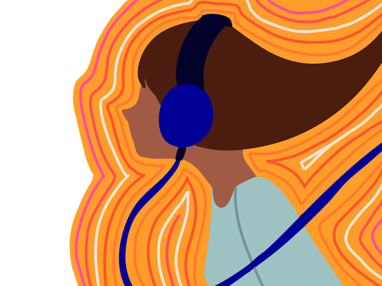

When I was a child, music had my heart from the very beginning. When I was in her womb, my mother told me that she used to put headphones on her belly for me to listen to the music. She played classical piano pieces and songs that were popular at her time, and she did this every night when she came home from work. I grew up in a household where karaoke was an every weekend activity. After all, we are Filipinos, and we are known to be very passionate about singing and playing musical instruments. My mother tells me that I started singing when I was two years old. Like every parent would say, they think I have a gift for music, but really, music became a part of me because of how it makes me feel. I recall singing my lungs out whenever I could, we were all once very carefree as children, and I was one of those children who would sing just because it gives me so much joy.
One Christmas, when I was at the age of five or six-ish, I woke up to a drum kit sitting in my living room, which my parents had gotten me as a present. I leapt out of joy, and without hesitation, I sat on the chair and grabbed my drumsticks and started hammering to the songs playing on the cassette player. Thankfully the neighbours were kind enough not to stop me from being too loud banging on the drums. I remember pretending that I was playing for a band and performing like I was on a stage.
Some years later, my father bought a guitar and started playing alone in his room. I was captivated by the sound of the acoustic strings and how well it resonates with his voice as he sang while strumming the guitar. That led the young me to peek at his door because I was mesmerised by his smooth duet and guitar. He noticed me right away and asked me to sit with him while he taught me how to play. I listened while he explained the basic chords and how to press the fingertips to the strings to create a clean sound. When he let me try, I remember the rush of excitement the first moment I held the guitar. It was difficult for me to put pressure on the strings. As a beginner, it was painful to learn to play the guitar. But the pain did not stop me there. I was determined to play smooth and create beautiful melodies from the instrument.
My dad wasn’t the only one who inspired me to learn how to play the guitar. As a child, I used to go to my godparents’ house because they babysitted me a lot when my parents were at work. My godfather is an artist, he draws, and he plays the guitar. I remember just sitting there and listening to him play or watch him draw. I was always drawn to art and was always in awe of how it has different forms of expression. When words are harder to say, I always try to communicate with music.
To be verbal was never my forte. I was always the quiet kid at the back of the classroom. When I reached my teen years, high school was where kids think they know their place in the world. I was just finding my own, and in the most bottomless pits of my despair, music was the light at the end of the tunnel. For me, the expression of emotions through music is such a phenomenal process. From creating a soulful structure of instruments, representing a story, an emotion, to singing words that I could not express through speaking. Music is storytelling, a language that translates your inner self.
I was in 4th grade when I started to have an interest in writing my own songs. I tend to write the most cliche lyrics to ever have existed. But somehow, the process of writing felt therapeutic. There was a sense of euphoria every time I found the right melody that portrays whatever I was feeling. Most artists say that writing a song and giving it to the audience is like passing their story to another. From my perspective, writing a song can help me express myself and process my emotions. It felt like having a best friend but in the sense of just having a conversation with myself and making peace with whatever conflicts I encounter within myself.
During high school, I met some of my greatest friends through music. We were already close, to begin with, but music brought more people together in our little circle of friends. We used to sit by the bench, pull out our guitars and just sing whatever that comes to mind. Life was simple back then, so raw and simple. Music created a bond that we didn’t know we could have. Music made us dream together and made us think we can be whoever we want to be.
Even though I must admit that now, my passion for music is fading in and out, becoming blurred lines. But just listening to certain songs just reminds me how influential and inspiring the piece is. That even if I lost my path, or myself, music paves the path to help me see a brighter picture.
We don’t have to know how to sing or play the instruments to interest in music because it is a tool to help us get through day by day. Some may take it as a form of art. Some take it as a form of therapy. At the end of the day, music can make bridges and build connections with one and another.
I, therefore, conclude that music is powerful, a beautiful language. Through music, we understand people, even if we do not speak the same vocabulary. The music itself is a powerful instrument that can deliver an impactful message and tell a compelling story.